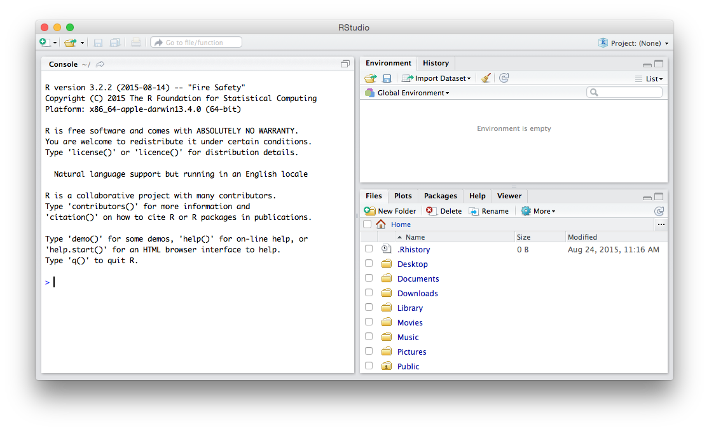

2 + 2[1] 410 * 5 - 4 / 0.5[1] 42Biol B215
In order to apply statistics effectively, we need to be able to perform calculations quickly and easily. A few calculations can be done by hand, but most require a calculator at least, and more likely a computer. While you can do a lot with something like Excel, what we really want is a system that was designed from the ground up for statistics. For this class, we are going to use R. R is available for Mac, Windows, and Linux. It is also free, which is great, but famously hard to learn at first. The task today (and for much of the rest of the semester), is to get up that “steep learning curve” so that you can use R for basic calculations and statistics and start to appreciate the power and flexibility of the system.
RTo use R, we first have to install it. Luckily, this is fairly straightforward. R is an open source project, and the latest version (along with the latest versions of many of the packages that we will get to later in the course) is available for download at “The Comprehensive R Archive Network” (CRAN): http://cran.r-project.org. Simply go to the CRAN website, and choose the link for the system that you are using. If you are on a Mac, be sure to select the version that corresponds to your operating system version: in partifular the “snowleopard” version for operating system versions below 10.9, and the main release for versions 10.9 and above. For Windows you will want to select the “base” package. As of this writing, the current version was 3.4.2.
Once you have downloaded and installed R you could be done and start right away using R and the basic interface that it comes with, but I find that interface to be a bit limited. A somewhat nicer interface comes from a separate open source project: RStudio. This project is still in active development, so while it is mostly stable, you should be aware that it can occasionally have problems and crash, and there will very likely be software updates through the semester that you will want to install to fix bugs or add features. The most current stable version of RStudio Desktop can be downloaded at https://www.rstudio.com/products/rstudio/download/ (the free version is what you want). As of this writing, the current version was 1.1.414.
With those two things installed, you should be ready to start using R on your computer.
Open RStudio and look around. When you open it for the first time, you will see three main panes, as in the image below. What you see may be slightly different depending on the exact version or RStudio you have (and whether you have a Mac or a PC), but the general layout should be similar.

On the left is the console (There may also be a “Terminal” pane, but you can ignore that for now). This is the main way that you interact with R, issuing commands and reading the results that they produce. You will see some text with information about the version of R that you are running as well as some extremely brief help. Below that is a blue carat, the command prompt. Give it a try by typing in some simple math:
On the right are two panes, each of which with several tabs at the top. (You can change which tabs are in each pane to your liking by choosing the “Pane Layout” section of the RStudio preferences.) I’ll go through them briefly here, and in more detail as they come up in use.
Starting with the top pane (though your layout may vary): Workspace is where you can see and manage the data and variables that are currently loaded by R. History shows a running list of the commands that you have given to R (usually through in the console pane), arranged in chronological order, so the most recent commend is at the bottom. If you want to rerun a command, you can just double-click it to send the text to the current input prompt (hit return to actually run the command). (If you have a tab labelled Git, that is for a version control system, which can be used to maintain old versions of a project and track the changes you are making. We won’t talk about it here, but if you do much computational work, it something you will want to learn about.)
In the bottom pane, you have a Files tab which shows a view of the files and folders on your computer, which you can use to load and save data. R has an important concept called the “Working Directory”, which we will come back to, but one of the most important functions of the Files tab is to allow you to set the current working directory by clicking on the little blue gear labeled “More”. Plots will show you all of the graphics that R generates (unless you have directed them somewhere else). You can page back through previous plots that you have generated using the arrows at the top of the pane, and the the “Export”” button can be used to save the graphics as separate files for later use.
Packages presents a list of all of the add-on (and some built-in) packages for R that are installed. These packages provide ways to extend R to perform new analysis, and are one of the most powerful parts of the system. To load a package, you can click the checkbox to the left of the package name. If you do that for one of the packages that is already installed, you will see that RStudio runs a command in the console: library("packageName"). That shows you another way of loading packages: you can type the library("packageName") command directly in the console (most of the time I will actually use require("packageName"), which mostly does the same thing).
While the basic R program can do an immense amount of very powerful statstical work, some of the real power of the system comes through the packages that have been written for it. These can be pretty much anything, ranging from replacements for some of R’s more quirky built-in functions (the plyr package, which we may be using later, is an example of this) to implementations of newly developed statistical models to subject-specific tools for the analysis of specialized types of data (i.e. microarray or next-generation sequencing data) to pretty much anything you can think of (Want to download tweets from Twitter? There is a package for that!). Most packages can be found at CRAN (The Comprehensive R Archive Network), butyou don’t actually need to go to the website to install them.
The main method of installation is quite simple. Assuming you know the name of the package, you can use the install.packages() command in the console. Installing the ggplot2 package (which we will be using extensively) would be done as follows:
An alternative method in RStudio is to go to the “Packages” tab and click on the “Install Packages” button at the top of the tabe of currently installed packages. This will pop up a window in which you can type the names of the package(s) you want to install.
For now, try installing the ggplot2 and knitr packages. We will be using those (and some others) later in the semester. Make sure that the “Install dependencies” checkbox is checked, as this will allow for R to automatically install some other packages that those packages depend on.
Finally, we have the Help tab. Most R functions have an associated help file, and when you open it, it will appear in this tab. How do you open a help file? The easiest way is to simply type a question mark in front of the function name in the console.
You can also use the help() command to perform the same task:
If you are not sure what the exact command you are looking for is, but you think you know some part of the command, you can use the apropos() or help.search() commands to try to find the function you are looking for.
These help files, as you might be noting if you are looking at one now, are not always all that helpful. They may contain a lot of information, but it is not always easy to figure out what exactly each part means. As you become more familiar with R, they should become more comprehensible. For now, one of the most useful parts tends to be way at the bottom of the help file, where there is usually a set of examples using the function with different options. Trying these out and seeing what the results are can be quite informative.
Once you have installed R and RStudio successfully, it is time move on to learning about how to actually use this powerful (but often frustrating) tool:
First Steps with R